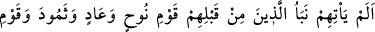
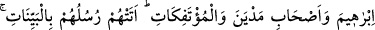
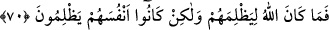

Eli boş olanın gönlü daha da perişan olur
70. Onlara kendilerinden öncekilerin; Nûh, Âd ve Semûd kavminin, İbrahim
kavminin, Medyen halkının ve alt üst edilen şehirlerin haberi gelmedi mi?
Peygamberleri onlara açık deliller getirmişti. Allah onlara zulmetmemiş, onlar
kendilerine yazık etmişlerdir.
“Onlara” münâfıklara “kendilerinden öncekilerin;” tûfanda boğulup helâk edilen
“Nûh” kavminin, dondurucu bir kasırga ile helâk edilen “Âd” kavminin, “ve”
sarsıntıyla ve korkunç sesle telef edilen “Semûd kavminin,” Reisleri Nemrud bir
sivrisinekle, ona tâbi olanlar ise binaları başlarına yıkılmak suretiyle helâk edilen
“İbrâhim kavminin, Medyen halkının” ki Medyen halkı Şuayb (a.s.)’ın kavmidir.
“Gölge günü”ndeki ateş ile (bk. eş-Şuarâ, 26/189) helak edildiler. Medyen, Hz.
İbrâhim’in oğlu Medyen olup yaşadığı yer onun adına nisbet edilmiştir. “ve alt üst
edilen şehirlerin” yurtları altüst edilmek ve üzerlerine pişmiş çamurdan taş
yağdırılmak suretiyle helak edilen Lût kavminin dehşetli “haberi” yâni onların
yaptıkları şeylerin ve bu yüzden de başlarına gelen felaketlerin haberi “gelmedi mi?”
Âyetteki soru edatı takrir ve sakındırma mânâsı taşımaktadır. Yani, daha önceki
ümmetlerin haberi münâfıklara kesinlikle ulaşmıştır ve onlar bu haberi işitmişlerdir.
Öyleyse onların düştüğü kötü duruma düşmekten sakınsınlar, demektir.
“Peygamberleri onlara” daha önce helak edilen kavimlerin tamamına “açık
deliller” beyyineler, yani açık delil ve burhanlar “getirmişti.” Ama onlar bu
peygamberleri yalanladılar, Allah da onları helâk etti. “Allah onlara zulmetmemiş,”
Allah’ın suçsuz yere cezalandırmak gibi insanların yaptığı zulme benzer bir âdeti yoktur.
Fakat “onlar” Allah’ı inkar edip kendilerini azaba maruz bırakarak “kendilerine yazık
etmişlerdir.”
Sâib der ki:
Niçin başkasından şikayet edeyim ki sevgili gibi
Daima kendi arzusunun peşine takılmış bir zavallıyım
Öyleyse akıllı insan gücüne, evladının çokluğuna ve mallarına aldanmamalıdır. Çünkü
bunların hepsi yok olmaya mahkumdur.
Hâfız şöyle söyler: